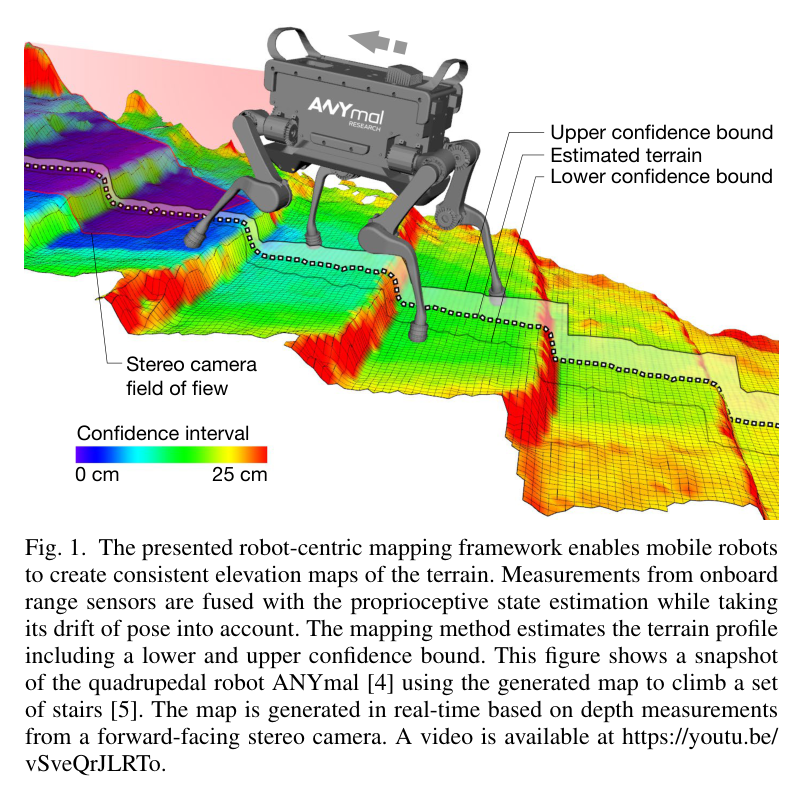
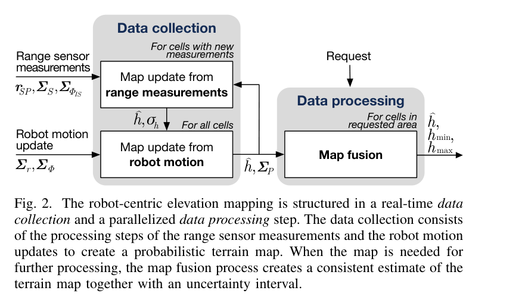
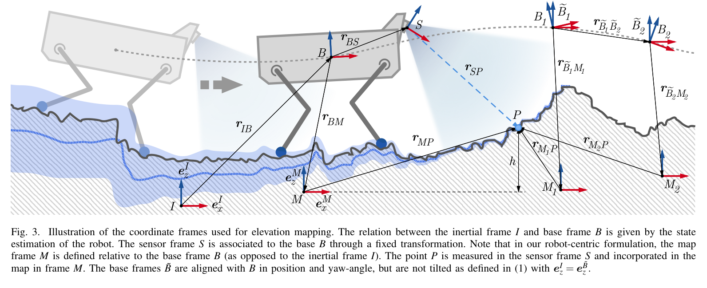
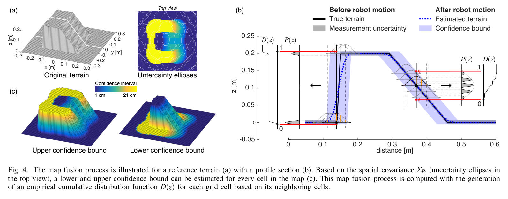
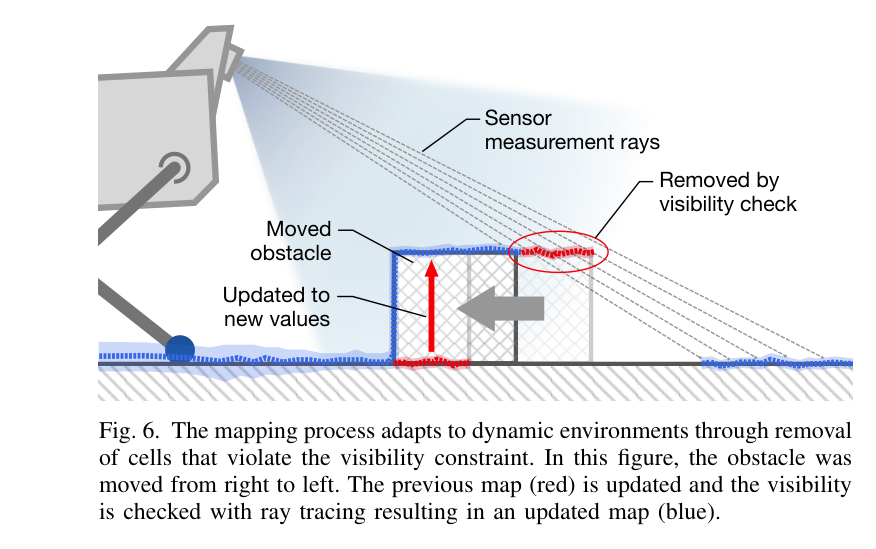
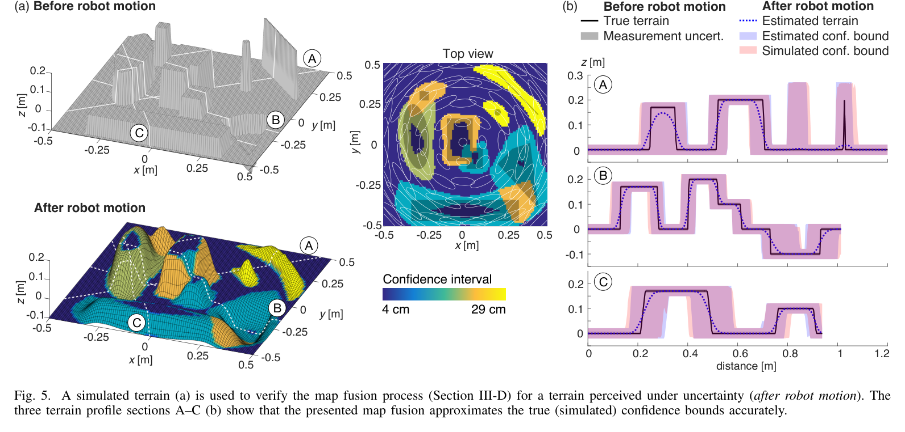
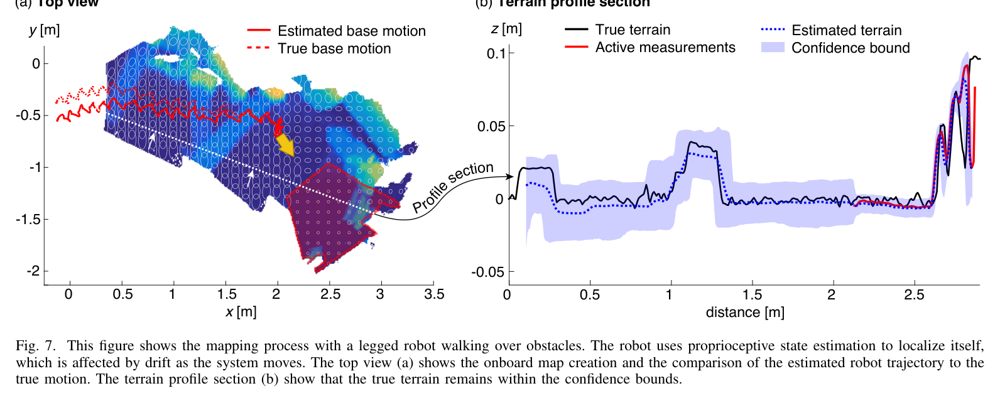
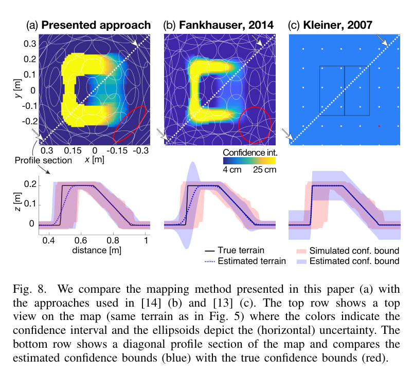

Probabilistic terrain mapping for mobile robots with uncertain localization
한줄 요약 — 지도를 현재 로봇 pose에 붙이고 거리센서·roll/pitch 오차와 누적 위치·yaw 공분산을 분리 전파한 뒤 2σ 이웃에서 셀별 95% 고도범위를 계산해, 외부 특징·GPS 없이도 StarlETH의 실제 지형이 신뢰구간 안에 남는 국소 신뢰지도를 실시간으로 만들었다.
1.연구 배경 및 동기
절대측위가 흔들려도 지형의 불확실성을 정직하게 유지하는 지도
거친 지형을 주행하는 로봇은 발판·차륜 충돌을 판단하려면 근거리 고도를 실시간으로 알아야 한다. 기존 세계좌표 고도지도는 비전 특징, 기하 정합 또는 GPS 기반 절대측위가 정확하다고 가정한다. 그러나 조명·특징·외부신호가 부족한 현장에서는 고유감각 관성·기구학 odometry가 더 견고할 수 있는 반면 위치와 yaw가 관측불가능해 시간이 지나며 드리프트한다. 이 pose를 확정값처럼 쓰면 지도가 흐려지거나 서로 모순되는 표면을 만든다.
논문은 전역 일관성을 억지로 복원하지 않고 로봇의 현재 pose에 붙은 국소 고도지도를 만든다. 새로 본 전방은 센서잡음과 관측 가능한 roll·pitch 불확실성만 반영해 정밀하게 갱신하고, 뒤로 밀려나는 오래된 셀은 로봇의 상대운동 공분산을 누적해 공간적으로 퍼뜨린다. 사용자가 지도를 요청할 때만 주변 셀 분포를 합쳐 평균 고도와 95% 상·하 신뢰경계를 계산하므로, 드리프트가 큰 영역은 지형 자체가 녹아 섞이는 모습으로 불확실성을 드러낸다.

원문 Figure 1 · PDF p.2 — Fig. 1. The presented robot-centric mapping framework enables mobile robots to create consistent elevation maps of the terrain. Measurements from onboard range sensors are fused with the proprioceptive state estimation while taking its drift of pose into account. The mapping method estimates the terrain profile including a lower and upper confidence bound. This figure shows a snapshot of the quadrupedal robot ANYmal [4] using the generated map to climb a set of stairs [5]. The map is generated in real-time based on depth measurements from a forward-facing stereo camera. A video is available at https://youtu.be/ vSveQrJLRTo.

원문 Figure 2 · PDF p.3 — Fig. 2. The robot-centric elevation mapping is structured in a real-time data collection and a parallelized data processing step. The data collection consists of the processing steps of the range sensor measurements and the robot motion updates to create a probabilistic terrain map. When the map is needed for further processing, the map fusion process creates a consistent estimate of the terrain map together with an uncertainty interval.
선행 연구의 한계
초기 elevation mapping은 여러 scan의 feature matching 오차가 합성지도에 어떻게 전파되는지 다루지 않았다.
로봇 중심 국소지도를 쓰던 선행법도 신뢰할 수 있는 pose tracking을 전제로 해 관성·기구학 위치추정의 장기 drift를 모델링하지 않았다.
Kleiner 방식은 이동거리·각도에 따라 높이분산만 선형 증가시켜 수평 위치불확실성을 놓치므로 평탄부는 과대, 구조부는 과소 추정했다.
저자들의 2014 방식은 2차원 공분산과 단순 융합 때문에 경계에서 실제 다봉분포를 충분히 표현하지 못하고 overshooting artifact가 생겼다.
이 연구의 기여
지도 frame을 로봇에 연결하고 거리측정과 운동 갱신의 관측가능·불가능 pose 성분을 분리했다.
각 셀에 높이평균·분산뿐 아니라 실제 지형점에 대한 3×3 공간 공분산을 유지하고 상대 위치·yaw 불확실성을 완전한 Jacobian으로 전파했다.
요청영역의 2σ 이웃으로 가중 경험분포를 구성해 평균과 95% 하·상 고도경계를 만드는 지연 map-fusion을 제안했다.
시뮬레이션·StarlETH 실기와 선행법 비교로 실제 지형이 신뢰경계 안에 포함됨을 확인했다.
2.방법론 및 시스템 구성
처리는 실시간 data collection과 필요 시 병렬 data processing으로 분리된다. 센서점은 map frame의 셀 높이와 분산으로 투영해 1차원 Kalman filter로 기존 높이에 융합한다. 로봇이 움직이면 모든 오래된 셀의 3차원 공분산에 상대 위치·yaw 공분산을 Jacobian으로 누적한다. 이 과정은 주변셀 재융합 없이 빠르게 실행되며, 최근 측정 셀의 x-y 분산은 격자 양자화 하한으로 다시 설정된다.
소비 알고리즘이 지도를 요청하면 지정 submap만 fusion한다. 셀의 x-y 2σ 타원 안 이웃 높이분포를 공간확률로 가중해 평균을 구하고, 누적분포의 최소·최대 표본에서 95% 하·상 경계를 만든다. 새 센서처리를 멈추지 않도록 이 계산은 별도 스레드에서 수행할 수 있다. 동적 환경에서는 낮아진 측정이 Mahalanobis 임계치를 넘으면 분산을 추가하고, 센서에서 측정점+3σ로 향하는 ray를 따라 가시높이보다 3σ 이상 높은 오래된 셀을 제거한다.
처리 파이프라인
1
좌표계와 관측가능성 분리
inertial I, base B, sensor S, map M을 정의한다. M의 z축은 inertial z와 정렬하고 yaw는 base와 맞춘다. 이 선택으로 새 높이 측정에는 센서 위치·yaw 불확실성이 들어가지 않고 roll·pitch와 거리센서 잡음만 영향을 준다.
2
거리측정 높이 갱신
센서점 r_SP를 map z축에 투영해 p와 σ²_p를 계산한다. JS와 JΦ로 센서잡음과 roll/pitch 회전공분산을 전파하고 기존 셀 높이·분산과 1차원 Kalman update한다. 한 셀에 벽처럼 여러 높이가 들어오면 Mahalanobis 거리로 높은 표면을 유지하고 낮은 outlier를 버린다.
3
로봇운동 공분산 전파
새 측정 셀은 x-y 격자분산 (d/2)²과 높이분산으로 초기화한다. 측정되지 않은 셀에는 두 pose 사이의 상대 위치·yaw 공분산을 변환해 각 셀의 거리벡터에 따른 회전 Jacobian과 함께 누적한다. 멀리 있는 오래된 셀일수록 yaw drift 영향이 커진다.
4
요청 기반 map fusion
각 셀의 2σ x-y confidence ellipse 안 이웃을 모아 가중 평균높이와 경험적 PDF/CDF를 만든다. 95% 구간 h_min, h_max를 산출하며 큰 평탄면은 좁고 물체경계는 수평불확실성 때문에 넓게 나타난다.
5
동적 지형 적응
현재 추정보다 충분히 낮은 새 측정에는 상수 잡음 σ̄²를 더해 오랜 고신뢰 표면을 빨리 낮춘다. 별도의 ray-tracing visibility check는 센서시야를 위반하는 과거 높이셀을 제거하며 계산비용 때문에 예시로 1 Hz 병렬 실행을 제안한다.
6
실시간 ROS 구현과 검증
Grid Map 기반 C++/ROS 라이브러리가 Intel RealSense, Kinect, Hokuyo, Velodyne 잡음모델을 제공한다. synthetic perturbation ground truth, StarlETH의 motion capture·정지형 laser ground truth, 2014/2007 방법 비교로 평가한다.
새 관측이 없는 셀에 상대 위치와 yaw 운동불확실성을 누적한다. yaw 항은 셀이 로봇에서 멀수록 큰 공간분산을 만든다.

원문 Figure 3 · PDF p.4 — Fig. 3. Illustration of the coordinate frames used for elevation mapping. The relation between the inertial frame I and base frame B is given by the state estimation of the robot. The sensor frame S is associated to the base B through a fixed transformation. Note that in our robot-centric formulation, the map frame M is defined relative to the base frame B (as opposed to the inertial frame I). The point P is measured in the sensor frame S and incorporated in the map in frame M. The base frames ˜B are aligned with B in position and yaw-angle, but are not tilted as defined in (1) with eI z = e ˜B z .

원문 Figure 4 · PDF p.5 — Fig. 4. The map fusion process is illustrated for a reference terrain (a) with a profile section (b). Based on the spatial covariance ΣPi (uncertainty ellipses in the top view), a lower and upper confidence bound can be estimated for every cell in the map (c). This map fusion process is computed with the generation of an empirical cumulative distribution function D(z) for each grid cell based on its neighboring cells.

원문 Figure 6 · PDF p.7 — Fig. 6. The mapping process adapts to dynamic environments through removal of cells that violate the visibility constraint. In this figure, the obstacle was moved from right to left. The previous map (red) is updated and the visibility is checked with ray tracing resulting in an updated map (blue).
3.핵심 기술
세계일관성 대신 국소 신뢰성을 택한 robot-centric frame
지도는 관성 frame에 고정되지 않고 현재 base와 함께 움직인다. 새 관측은 드리프트한 전역 위치 때문에 오염되지 않고 과거 표면만 상대운동 불확실성만큼 퍼진다. mapping-localization feedback을 두지 않으며, 계획기는 높이와 보수적 upper/lower bound를 함께 쓸 수 있다.
position·yaw drift를 지도에 명시
roll·pitch는 새 측정분산에 반영
mapping→localization feedback 없음
로컬 submap 중심 처리
셀별 3차원 공간공분산과 지연 융합
수평 pose 오차는 경사·모서리에서 높이오차로 바뀌므로 높이분산만 늘려서는 부족하다. x-y-z 공분산 타원과 이웃 혼합분포 때문에 평지는 좁고 모서리는 넓은 신뢰구간이 된다. 이웃융합은 요청된 관심영역에만 수행해 20 Hz 센서 갱신과 분리한다.
Σ_P∈R3×3 per cell
2σ x-y ellipse
95% height interval
collection과 fusion 병렬화
낮아진 표면과 가시성으로 동적 환경 정리
반복관측으로 고신뢰가 된 셀은 장애물 이동 뒤 낮은 표면을 늦게 받아들인다. 충분히 낮은 새 점에는 분산을 더하고, 측정점 +3σ와 센서를 잇는 ray의 가시상한보다 추정높이-3σ가 큰 과거 셀을 제거해 ghost를 정리한다.
Mahalanobis 기준의 하향변화 감지
σ̄² 추가
3σ visibility violation 제거
저속 병렬 ray tracing
4.실험 결과
실험 환경·장비·데이터
synthetic terrain에 주어진 pose uncertainty를 반복 표본화해 참조 confidence bounds를 만든 simulation dataset을 사용했다.
StarlETH 사족보행로봇, PrimeSense Carmine 1.08 structured-light depth sensor, kinematic·inertial proprioceptive state estimator를 사용했다.
실제 robot pose는 optical motion capture로, 참조 지형은 정지형 Leica Nova MS50 MultiStation laser scanner로 계측했다.
실차 지도는 1×1 cm 셀 해상도, 센서 data collection 20 Hz로 생성했다.
실험 프로토콜
simulation에서는 세 단면 A-C에서 제안 fusion의 추정구간과 exhaustive perturbation으로 만든 실제 confidence bounds를 겹쳐 비교했다.
실차에서는 StarlETH가 장애물을 걸어 넘는 동안 drift odometry로 지도를 만들고, 추정·실제 궤적과 단면 지형 및 confidence bounds를 ground truth와 비교했다.
ground truth terrain이 추정 95% 상·하 confidence bounds 안에 포함되는지
평탄부와 물체경계에서 confidence interval의 구조 적합성
지도 갱신주기와 격자해상도
drift가 누적된 미관측 영역의 공간 covariance 증가

원문 Figure 5 · PDF p.6 — Fig. 5. A simulated terrain (a) is used to verify the map fusion process (Section III-D) for a terrain perceived under uncertainty (after robot motion). The three terrain profile sections A–C (b) show that the presented map fusion approximates the true (simulated) confidence bounds accurately.

원문 Figure 7 · PDF p.8 — Fig. 7. This figure shows the mapping process with a legged robot walking over obstacles. The robot uses proprioceptive state estimation to localize itself, which is affected by drift as the system moves. The top view (a) shows the onboard map creation and the comparison of the estimated robot trajectory to the true motion. The terrain profile section (b) show that the true terrain remains within the confidence bounds.

원문 Figure 8 · PDF p.8 — Fig. 8. We compare the mapping method presented in this paper (a) with the approaches used in [14] (b) and [13] (c). The top row shows a top view on the map (same terrain as in Fig. 5) where the colors indicate the confidence interval and the ellipsoids depict the (horizontal) uncertainty. The bottom row shows a diagonal profile section of the map and compares the estimated confidence bounds (blue) with the true confidence bounds (red).
핵심 결과 해석
synthetic 평가에서 제안 fusion의 상·하 경계는 반복 표본으로 만든 실제 경계와 세 단면에서 밀접하게 맞았다. 수평 pose uncertainty가 커져도 넓은 평탄면은 좁은 고도구간을 유지하고, 물체 모서리와 급격한 지형변화만 넓어졌다. 이는 같은 위치오차가 지형 기울기에 따라 다른 높이위험을 만든다는 공간공분산 설계의 의도와 일치한다.
StarlETH 실험에서는 고유감각 state estimate의 위치·yaw가 실제 궤적에서 벗어나 미관측 지형의 평균도 ground truth와 벌어졌다. 그러나 그 셀들의 error ellipse와 높이경계가 함께 증가해 실제 terrain profile은 confidence bounds 안에 남았다. 새로 관측하는 전방셀은 계속 좁은 구간을 유지했으므로, 지도는 전역 정확도를 가장하지 않고 국소 계획에 필요한 신뢰도를 제공했다.
비교에서 2014 방식은 모서리 다봉분포를 놓쳐 overshoot와 과소추정을 함께 보였고, Kleiner 방식은 평탄면을 과대·구조영역을 과소 추정했다. 원문은 RMSE나 coverage percentage 없이 단면과 ground truth 포함성으로 차이를 제시한다.
정량 결과
평가 항목
정량 결과
조건·맥락
원문 근거
실차 지도 갱신률
20 Hz
StarlETH PrimeSense depth data collection
PDF p.7
실차 지도 해상도
1×1 cm/cell
장애물 보행 hardware evaluation
PDF p.7
출력 신뢰구간
95%
각 셀의 2σ 이웃분포에서 lower/upper height bounds
PDF p.6
동적 visibility check 예시 주기
1 Hz
계산집약 ray tracing을 data collection과 병렬 저주기로 수행
PDF p.7
실기 ground truth 장비
optical motion capture + Leica Nova MS50
실제 pose와 참조 terrain 독립 측정
PDF p.7
실패 사례와 경계조건
로봇이 제자리에서 여러 걸음을 밟으면 위치추정 drift가 누적되어 바로 아래 지형도 재관측 이점 없이 불확실해진다.
요청 시 2σ 이웃을 융합하는 계산비용은 map 크기와 요청영역에 따라 커져 전체 지도를 매 프레임 산출하기 어렵다.
동적 환경의 추가분산은 적응속도와 경계 불확실성 사이의 튜닝을 요구한다.
5.한계 및 향후 연구
현재 한계
반복 제자리 stepping에서는 아래 지형의 uncertainty가 계속 커져 terrain-aware control이 어려워진다.
2.5D 단일고도 표현으로 overhang과 같은 복수표면을 보존하지 못한다.
map fusion과 ray tracing은 계산집약적이어서 저주기 병렬처리에 의존한다.
향후 연구
저자들이 진행 중이라고 밝힌 하향 depth sensor를 추가해 제자리 stepping 중 발밑 지형을 반복관측한다.
더 정확한 localization으로 상대운동 공분산 증가를 줄인다.
foot contact와 지도 feature를 정합해 localization에 피드백하되 mapping error가 제어를 오염하지 않도록 강건하게 결합한다.
6.한마디로 정리
핵심 방법은?
robot-centric 고도셀에 3D 공간공분산을 누적하고 요청 시 2σ 이웃을 융합해 95% 고도범위를 산출한다.
핵심 결과는?
20 Hz·1 cm StarlETH 지도에서 odometry가 drift해도 실제 지형이 추정 confidence bounds 안에 남았다.
한계는?
제자리 보행 시 불확실성이 커지고, 2.5D 국소지도·고비용 fusion이며 집계 정확도 수치는 제시되지 않았다.
#측위·매핑#환경인식#확률 고도지도#이동 불확실성 전파#고도 신뢰구간
나의 의견 / 우리 연구와의 연관성
자율굴착은 GNSS가 불안정하고 작업이 지형을 바꾸므로 고도 하나보다 셀별 신뢰범위가 중요하다. 버킷 충돌회피는 upper bound를, 굴착완료 판정은 lower/upper 범위를 함께 사용해 보수적 작업결정을 내릴 수 있다. 특히 위치드리프트를 숨기지 않고 지형경계에서만 큰 고도위험으로 변환하는 접근은 현장 안전지도에 적합하다.
원 논문의 동적 환경 확장은 이동 장애물 제거를 위한 것이지만, 굴착영역에서는 버킷이 낮춘 표면을 빠르게 받아들이는 장치로 연결된다. 다만 단순 visibility만으로는 실제 굴착과 가림을 완전히 구분할 수 없으므로 버킷 pose·접촉상태를 process model에 넣고 작업셀의 변화율을 별도 추정하는 것이 필요하다.
공격점 선택 시 목표면 오차뿐 아니라 h_max-h_min을 비용으로 넣으면 불확실한 가장자리의 과도한 굴착을 피할 수 있다.
버킷 경로 직후 낮아진 측정에 분산을 추가하고 LiDAR 재관측으로 수렴시키면 자가 변경 지도를 빠르게 갱신할 수 있다.
위치·yaw drift의 거리별 전파는 긴 붐 끝의 충돌위험을 정량화하는 데 유용하다.
버킷 주변 overhang·트렌치 벽은 3D 또는 다중표면 지도와 병행해야 한다.
7.전체 그림·표
본문 핵심 위치에 배치하지 않은 원문 Figure와 Table을 원문 페이지 순서로 수록한다.